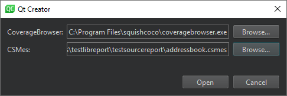
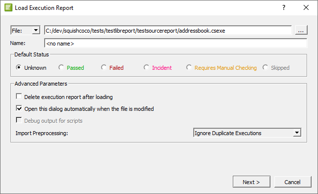

Checking Code Coverage
Coco is a complete code coverage tool chain for Tcl, QML, C# and C/C++ programs, which runs on macOS, Linux, and Windows.
Coco analyzes the way an application runs, as part of a test suite, for example. The results enable you to make the tests more efficient and complete.
You can:
- Find untested code sections.
- Find redundant tests which can then be eliminated. Coco can identify portions of the source code that are covered by a test. It can detect whether a new test covers lines in the source code that the existing tests do not cover.
- Find dead code by displaying code that is never executed.
- Calculate the optimum test execution order so as to maximize test coverage for each run. This is particularly useful for manual testing.
- Analyze two separate versions of an application and compare the differences. This makes it possible to see which tests are affected by source code modifications and also to get some measure of the test coverage of a patch or hot fix.
- Measure the execution time of applications and tests.
The experimental Coco plugin integrates Coco CoverageBrowser into Qt Creator. It enables you to analyze the test coverage by loading an instrumentation database (a .csmes file), which was generated by Coco CoverageScanner. It is currently supported only on Windows, with Coco version 6.0, or later.
To use the plugin, you must download and install Coco.
Note: Enable the Coco plugin to use it.
Configuring Coco
- Select Analyze > Squish Coco.

- In CoverageBrowser, enter the path to the Coco coverage browser to use for analyzing a .csmes file.
- In CSMes, select the instrumentation database to load.
- Select Open to start CoverageBrowser.
- In CoverageBrowser, select File > Load Execution Report and select the .csexe for the coverage scan.

- If you want to reuse the execution report, deselect the Delete execution report after loading check box.
Open the analyzed files in Qt Creator. The results of the analysis are displayed after the code in Edit mode. You can change the fonts and colors used for different types of results.
Changing Fonts and Colors
To change the default fonts and colors, select Preferences > Text Editor > Font & Colors. Create your own color scheme and select new fonts and colors for the following results:
- Code Coverage Added Code
- Partially Covered Code
- Uncovered Code
- Fully Covered Code
- Manually Validated Code
- Code Coverage Dead Code
- Code Coverage Execution Count too Low
- Implicitly Not Covered Code
- Implicitly Covered Code
- Implicit Manual Coverage Validation
See also Enable and disable plugins and Font & Colors.